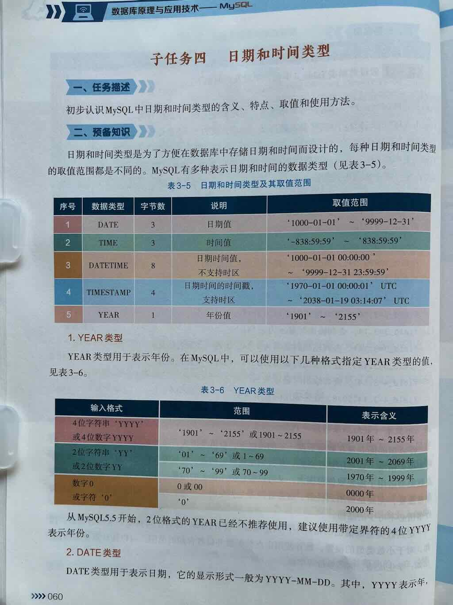
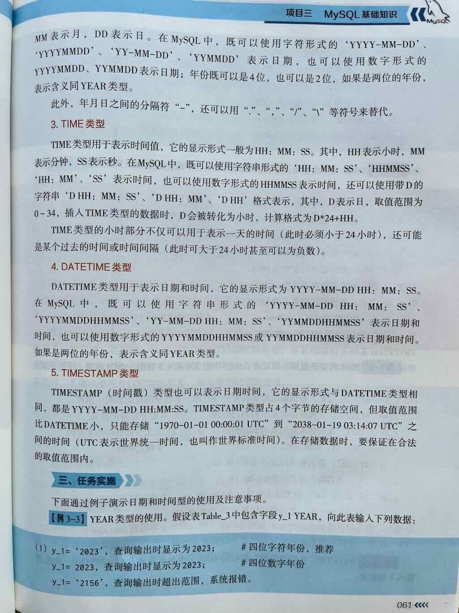
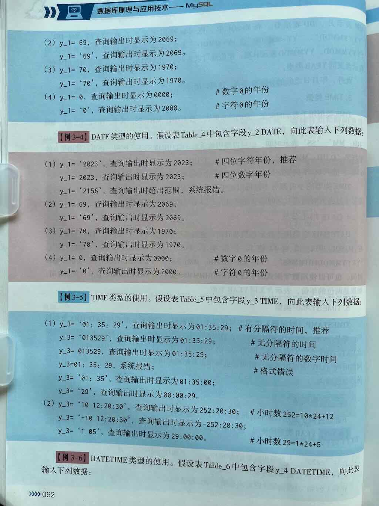

MySQL 中日期时间类型的用法详解
在 MySQL 中，日期时间类型（Date and Time Types） 是用于存储日期、时间、或者日期与时间的组合的数据类型。它们在许多业务场景中都非常关键，比如：
- 📅 用户注册日期
- 🕒 订单创建时间、支付时间
- 📆 员工入职日期、合同到期日
- 🧾 财务报表的统计时间范围
- 🚀 定时任务、日志记录的时间戳
MySQL 提供了多种专门的日期时间类型，以满足不同精度和场景的需求。




一、MySQL 支持的日期时间类型总览
| 数据类型 | 字节大小 | 格式 | 说明 | 取值范围 |
|---|---|---|---|---|
| DATE | 3 字节 | YYYY-MM-DD |
仅存储日期（年-月-日） | '1000-01-01' 到 '9999-12-31' |
| TIME | 3 字节 | HH:MM:SS 或更复杂格式 |
仅存储时间（时:分:秒），也可表示时间间隔 | -838:59:59 到 '838:59:59' |
| DATETIME | 8 字节 | YYYY-MM-DD HH:MM:SS |
存储日期和时间组合 | '1000-01-01 00:00:00' 到 '9999-12-31 23:59:59' |
| TIMESTAMP | 4 字节 | YYYY-MM-DD HH:MM:SS |
存储日期和时间，但范围较小，且受时区和插入时间影响 | '1970-01-01 00:00:01' UTC 到 '2038-01-19 03:14:07' UTC |
| YEAR | 1 字节 | YYYY |
仅存储年份 | 1901 ~ 2155（或 0000，取决于设置） |
二、各日期时间类型详解
1️⃣ DATE（日期类型）
格式：YYYY-MM-DD
仅存储日期，不包含时间部分
适用场景：
- 用户注册日期
- 订单日期、生日
- 合同开始/结束日期
示例：
取值范围：
'1000-01-01'~'9999-12-31'
2️⃣ TIME（时间类型）
格式：HH:MM:SS 或更复杂的格式（如 '12:34:56.789'）
仅存储时间，不包含日期
适用场景：
- 活动持续时间
- 某个操作的耗时
- 营业时间
⚠️ 注意：TIME 也可以表示一个时间间隔，不仅仅是某个时刻
示例：
CREATE TABLE events (
id INT PRIMARY KEY,
event_name VARCHAR(100),
duration TIME -- 如 '02:30:00' 表示 2小时30分钟
);
取值范围：
-838:59:59~'838:59:59'（支持负数，可用于表示时间差）
3️⃣ DATETIME（日期 + 时间）
格式：YYYY-MM-DD HH:MM:SS
同时存储日期和时间，但不受时区影响
适用场景：
- 订单创建时间
- 日志记录时间
- 某个具体时刻发生的事情（精确到秒）
示例：
CREATE TABLE orders (
id INT PRIMARY KEY,
order_no VARCHAR(50),
order_time DATETIME -- 如 '2024-06-01 14:30:00'
);
取值范围：
'1000-01-01 00:00:00'~'9999-12-31 23:59:59'
4️⃣ TIMESTAMP（时间戳）
格式：YYYY-MM-DD HH:MM:SS
存储日期和时间，但范围较小，且与 UTC 和系统时区有关
特点：
- 范围比 DATETIME 小很多（1970 年 ~ 2038 年）
- 自动转换为 UTC 存储，取出时再转为当前时区
- 如果插入时未指定 TIMESTAMP 字段的值，MySQL 会自动填充当前时间
- 很适合做 “创建时间” 或 “更新时间” 的自动记录字段
示例：
CREATE TABLE logs (
id INT PRIMARY KEY,
action VARCHAR(100),
created_at TIMESTAMP DEFAULT CURRENT_TIMESTAMP -- 自动填入当前时间
);
取值范围：
'1970-01-01 00:00:01' UTC~'2038-01-19 03:14:07' UTC
⚠️ 注意：2038年问题（Y2K38），超过这个时间后 TIMESTAMP 会溢出（类似 2038 年的 Unix 时间戳限制）
5️⃣ YEAR（年份类型）
格式：YYYY
仅存储年份信息
适用场景：
- 员工入职年份
- 产品发布年份
- 车辆生产年份
示例：
取值范围：
- 默认：
1901~2155 - 如果设置为
YEAR(2)，则范围为00~99（通常不建议，容易混淆）
三、如何选择合适的日期时间类型？
| 使用场景 | 推荐类型 | 说明 |
|---|---|---|
| 只需存储日期（如生日、节假日） | DATE | 只含年月日，最常用 |
| 只需存储时间（如活动时长、营业时间） | TIME | 只含时分秒，或时间间隔 |
| 需要存储日期 + 时间，且范围很大（千年以上） | DATETIME | 不受时区影响，推荐大多数业务场景使用 |
| 需要存储日期 + 时间，且希望自动记录创建/更新时间 | TIMESTAMP | 自动填充当前时间，但范围有限（到 2038 年） |
| 只需存储年份（如年份信息） | YEAR | 仅存储年份，节省空间 |
四、常用日期时间函数
MySQL 提供了丰富的日期时间函数，用于获取、格式化、计算日期时间：
常用函数举例：
| 函数 | 说明 | 示例 |
|---|---|---|
NOW() |
当前日期和时间（DATETIME） | 2024-06-01 14:30:00 |
CURDATE() |
当前日期（DATE） | 2024-06-01 |
CURTIME() |
当前时间（TIME） | 14:30:00 |
YEAR(date) |
提取年份 | YEAR(NOW()) → 2024 |
MONTH(date) |
提取月份 | 1 ~ 12 |
DAY(date) |
提取日 | 1 ~ 31 |
DATE_FORMAT(date, format) |
格式化日期 | DATE_FORMAT(NOW(), '%Y-%m-%d') |
DATEDIFF(date1, date2) |
计算两个日期相差的天数 | DATEDIFF('2024-06-10', '2024-06-01') → 9 |
五、示例：创建包含各种日期时间字段的表
CREATE TABLE events (
id INT PRIMARY KEY AUTO_INCREMENT,
event_name VARCHAR(100),
event_date DATE, -- 仅日期，如 '2024-06-01'
start_time TIME, -- 仅时间，如 '14:00:00'
created_at DATETIME, -- 日期+时间，如 '2024-06-01 10:00:00'
updated_at TIMESTAMP DEFAULT CURRENT_TIMESTAMP ON UPDATE CURRENT_TIMESTAMP,
event_year YEAR -- 仅年份，如 2024
);
六、总结
| 类型 | 字节数 | 格式 | 是否包含日期 | 是否包含时间 | 推荐使用场景 | 取值范围 |
|---|---|---|---|---|---|---|
| DATE | 3 | YYYY-MM-DD |
✅ | ❌ | 生日、节假日、注册日期 | 1000-01-01 ~ 9999-12-31 |
| TIME | 3 | HH:MM:SS |
❌ | ✅ | 活动时间、耗时 | -838:59:59 ~ 838:59:59 |
| DATETIME | 8 | YYYY-MM-DD HH:MM:SS |
✅ | ✅ | 订单时间、日志、大多数业务场景 | 1000-01-01 00:00:00 ~ 9999-12-31 23:59:59 |
| TIMESTAMP | 4 | YYYY-MM-DD HH:MM:SS |
✅ | ✅ | 自动记录创建/更新时间，但范围有限 | 1970-01-01 00:00:01 UTC ~ 2038-01-19 03:14:07 UTC |
| YEAR | 1 | YYYY |
✅（仅年） | ❌ | 年份信息 | 1901 ~ 2155 |
✅ 总结一句话：
MySQL 提供了 DATE、TIME、DATETIME、TIMESTAMP 和 YEAR 等多种日期时间类型，用于存储各种精度的时间信息。其中 DATETIME 是最通用、范围最大的选择，TIMESTAMP 适合自动记录时间戳，而 DATE 和 YEAR 则用于更简单的场景。
如你希望了解：
- 如何在 SELECT 中格式化日期显示
- 如何用 DATE_ADD / DATE_SUB 进行日期计算
- 如何设置字段 自动记录创建/更新时间
- 或者如何在 应用程序中处理 MySQL 的日期类型
欢迎继续提问！我可以为你提供详细的 SQL 示例与最佳实践。
日期时间类型
日期时间类型是一种特殊的字符串。
1.日期时间类型
用途：用于存储日期和时间。
MySQL中常用的时间类型主要包括以下几种:
| 说明 | DATE | YEAR | TIME | DATETIME | TIMESTAMP |
|---|---|---|---|---|---|
| 用途 | 存储字面日期 | 存储年份 | 存储字面时间 | 存储字面日期时间 | 存储时间戳 |
| 格式 | 'YYYY-MM-DD' | 'YYYY' | 'HH:MM:SS' | 'YYYY-MM-DD HH:MM:SS' | Unix时间戳 |
| 格式 | '2025-05-09' | '2025' | '10:08:00' | '2025-05-09 10:08:00' | Unix时间戳 |
| 时区支持 | 无 | 无 | 无 | 无 | 自动转换时区 |
| 自动更新 | 否 | 否 | 否 | 需手动设置 | 支持 |
| 存储效率 | 高 | 最高 | 中 | 较低 | 较高 |
| 函数 | CURRENT_DATE() | NOW() | CURRENT_TIMESTAMP | ||
| 应用场景 | 仅需日期 | 仅需年份 | 时间间隔或持续时间 | 无时区需求的本地化时间 | 跨时区应用、自动更新时间戳 |
2.CURRENT_DATE
读取系统日期。需要注意的是，将DATE类型字段的默认值设置为CURRENT_DATE()，必须将表达式用括号包裹，CURRENT_DATE和CURRENT_DATE()在MySQL中是等效的，但建议统一使用不带括号的CURRENT_DATE以避免混淆。
3.NOW()
读取系统日期和时间
4.TIMESTAMP
TIMESTAMP 类型用于存储时间点。最大特点：将 UTC 时间戳转换为不同时区的本地时间。
- 时间：就是time，time就是时间。
- 戳：标记，比如：“打个戳”就是打个标记。
- 时间戳，就是时间的标记。标记时间的起点。
-
时间戳存储的是一个毫秒值 = 即时时间 - 1970年1月1日 00:00:00 UTC （Unix 纪元）
-
时间点是基于 UTC 的时间点
- UTC（Coordinated Universal Time） 是全球通用的标准时间基准，中文译为 协调世界时。它在计算机系统和国际事务中广泛应
- 支持自动时区转换和更新
- 适用于需要时间标准化的场景。
5.YEAR()函数
用途
用于从日期或日期时间值中提取年份部分。
语法
参数
- date: 可以是
DATE、DATETIME、TIMESTAMP类型的值，或能解析为日期的字符串（如'2023-10-05'）。
返回值
- 四位数的年份（如
1999,2023）。 - 若输入为无效日期、无法解析的字符串或
NULL，则返回NULL。
示例
-- 输入标准日期或日期时间格式
SELECT YEAR('2023-10-05'); -- 输出：2023
SELECT YEAR('2025-05-10 14:30:00'); -- 输出：2025（时间部分被忽略）
SELECT YEAR(CURDATE()); -- 返回当前年份（如 2023）
SELECT YEAR(NOW()); -- 返回当前日期时间的年份
SELECT YEAR('0000-00-00'); -- 输出：0（MySQL允许零日期）
SELECT YEAR('9999-12-31'); -- 输出：9999
SELECT YEAR('2023-02-30'); -- 输出：NULL（无效日期）
SELECT YEAR('invalid-date'); -- 输出：NULL（无法解析）
SELECT YEAR(NULL); -- 输出：NULL
-- 输入“非标准格式” 不保证
SELECT YEAR('2023/10/05'); -- 输出：2023（兼容部分非标准分隔符）
SELECT YEAR('20231005'); -- 输出：2023（数字格式自动转换）
SELECT YEAR(20231005); -- 输出：2023
SELECT YEAR(20231301); -- 输出：NULL（无效月份13）
6.MONTH()函数
用途
用于从日期或日期时间值中提取月份部分。
语法
参数
- date: 可以是
DATE、DATETIME、TIMESTAMP类型的值，或能解析为日期的字符串（如'2023-10-05'）。
返回值
- 返回一个1到12之间的整数（如
1表示1月，12表示12月） - NULL：若日期无效或为
NULL，则返回NULL。
示例
SELECT MONTH('2023-10-05'); -- 输出：10（10月）
SELECT MONTH('2025-05-10 14:30:00'); -- 输出：5（时间部分被忽略）
SELECT MONTH(CURDATE()); -- 返回当前月份（如当前为10月则输出10）
SELECT MONTH(NOW()); -- 返回当前日期时间的月份（如 `NOW()`为2023-10-05 15:30:00，输出10）
SELECT MONTH('2023-01-01'); -- 输出：1（1月）
SELECT MONTH('2023-12-31'); -- 输出：12（12月）
SELECT MONTH('2023-13-01'); -- 输出：NULL（无效月份13）
SELECT MONTH('invalid-date'); -- 输出：NULL（无法解析）
SELECT MONTH(NULL); -- 输出：NULL
-- 输入非标准时间格式，不保证正确输出
SELECT MONTH('2023/10/05'); -- 输出：10（兼容部分非标准分隔符）
SELECT MONTH('20231005'); -- 输出：10（数字格式自动转换）
SELECT MONTH(20231005); -- 输出：10
SELECT MONTH(20231301); -- 输出：NULL（无效月份13）
7.DAY()函数
用途
用于从日期或日期时间值中提取月份中的天数部分。
语法
参数
- date: 可以是
DATE、DATETIME、TIMESTAMP类型的值，或能解析为日期的字符串（如'2023-10-05'）。
返回值
- 整数（1-31）：表示月份中的第几天。
- NULL：若日期无效或为
NULL，则返回NULL。
示例
SELECT DAY('2023-10-05'); -- 输出：5
SELECT DAY('2023-12-31 22:45:00'); -- 输出：31（时间部分被忽略）
SELECT DAY(NOW()); -- 返回当前日期的天数部分。
SELECT DAY('2023-02-30'); -- 输出：NULL（2月无30日）
SELECT DAY('invalid-date'); -- 输出s：NULL（格式错误）
SELECT DAY(NULL); -- 输出：NULL
8.DATE_FORMAT()函数
DATE_FORMAT() 是 MySQL 中用于将日期或时间值按指定格式转换为字符串的核心函数，广泛应用于数据展示、报表生成等场景。以下是其详细用法和示例：
基本语法
参数说明
date：需要格式化的日期/时间值，可以是DATE、DATETIME、TIMESTAMP类型或合法字符串（如'2023-10-05'）。format：定义输出格式的字符串，由 格式符 和普通字符组成（如'%Y-%m-%d'）。
常用格式符
| 格式符 | 说明 | 示例值（输入：2023-10-05 14:30:00） |
|---|---|---|
%Y |
四位年份 | 2023 |
%y |
两位年份 | 23 |
%M |
月份英文全名 | October |
%b |
月份英文缩写 | Oct |
%m |
两位数字月份（01-12） | 10 |
%c |
数字月份（1-12） | 10 |
%d |
两位日期（01-31） | 05 |
%e |
数字日期（1-31） | 5 |
%D |
带英文后缀的日期 | 5th |
%W |
星期英文全名 | Thursday |
%a |
星期英文缩写 | Thu |
%w |
星期数字（0=周日, 1=周一） | 4 |
%H |
24小时制小时（00-23） | 14 |
%h |
12小时制小时（01-12） | 02 |
%i |
分钟（00-59） | 30 |
%s |
秒（00-59） | 00 |
%p |
AM/PM | PM |
%f |
微秒（000000-999999） | 000000 |
%% |
转义字符% |
% |
9.典型使用场景
- 基础日期格式化
SELECT
DATE_FORMAT('2023-10-05', '%Y-%m-%d'), -- 2023-10-05
DATE_FORMAT('2023-10-05', '%d/%m/%Y') , -- 05/10/2023
DATE_FORMAT('2023-10-05', '%M %e, %Y') ; -- October 5, 2023
- 时间格式化
SELECT
DATE_FORMAT('2023-10-05 14:30:00', '%H:%i:%s'),-- 14:30:00
DATE_FORMAT('2023-10-05 14:30:00', '%h:%i %p'); -- 02:30 PM
- 组合日期与时间
- 按年月分组统计
-- 统计每月订单数量
SELECT
DATE_FORMAT(order_date, '%Y-%m') AS month,
COUNT(*) AS order_count
FROM orders
GROUP BY month;
练习1.存储年月日表
要求：
1.创建一个表my_datetime
- id 整型、主键、自增长
- 日期(m_date)： 日期类型
- 年份(m_year): 年份
- 时间(m_time): 时间类型
-
日期时间(m_datetime): 日期时间类型
-
插入两条数据
| id | m_date | m_year | m_time | m_datetime |
|---|---|---|---|---|
| 1 | 2025-05-10 | 2025 | 14:33:06 | 2025-05-10 14:33:06 |
| 2 | 2026-12-24 | 2026 | 12:00:00 | 2026-12-24 12:00:00 |
-
使用
year()month()day()从m_datetime中提取出年、月、日 -
使用
hour()minute()second()从m_datetime中提取出时、分、秒 -
使用DATE_FORMAT()函数提取出以下时间
-
2025年05月10日 14时33分06秒
-
12/24/2026
-
May 10, 2025
-
2026%12%24
-
02:33 PM
-- 创建表my_datetime
CREATE TABLE table_datetime(
order_id INT PRIMARY KEY AUTO_INCREMENT,
the_date DATE,
the_time TIME,
the_datetime DATETIME
the_year YEAR
);
练习：
- 查询 2005 年出生的学生
- 查询出生日期在 6 月的学生
- 查询出生日期在 2005 年且月份为奇数的学生
- 查询生日在下一周（假设当前日期为 2023-10-01）的学生
参考答案：
1. 查询 2005 年出生的学生
SELECT name, birthdate
FROM students
WHERE YEAR(birthdate) = 2005;
2. 查询出生日期在 6 月的学生**
SELECT name, birthdate
FROM students
WHERE MONTH(birthdate) = 6;
3. 查询出生日期在 2005 年且月份为奇数的学生
SELECT name, birthdate
FROM students
WHERE YEAR(birthdate) = 2005
AND MONTH(birthdate) % 2 = 1;
4.查询生日在下一周（假设当前日期为 2023-10-01）的学生**
为什么第一段代码可以查询出结果，第二段查询不出结果？
第一段代码：
SELECT name, birthdate
FROM students
WHERE DATE_FORMAT(birthdate, '%m-%d')
BETWEEN DATE_FORMAT('2023-10-01', '%m-%d')
AND DATE_FORMAT('2023-10-07', '%m-%d');
第二段代码：
select name,date_format(birthdate,'%m-%d') as 生日
from students
where date_format(birthdate, '%m-%d')
between date_format(current_timestamp,'%m-%d')
and date_format((current_timestamp + interval 6 day),'%m-%d');
练习2：会议表
创建一个名为 meeting_schedule 的表，包含以下字段：
- 会议ID（meeting_id）（整数，主键，自增）
- 会议主题（topic）（变长字符串，最长50字符，非空）
- 开始时间（start_time）（精确到秒的事件时间，存储本地时间）
- 预计时长（duration_minutes）（以分钟为单位的整数）
- 创建时间（created_at）（自动记录数据插入时间）
- 是否已结束（is_ended）（布尔值，默认未结束）
参考答案
CREATE TABLE meeting_schedule (
meeting_id INT AUTO_INCREMENT PRIMARY KEY,
topic VARCHAR(50) NOT NULL,
start_time DATETIME NOT NULL, -- 存储本地时间
duration_minutes INT UNSIGNED,
created_at TIMESTAMP DEFAULT CURRENT_TIMESTAMP,
is_ended BOOLEAN DEFAULT FALSE
)
INSERT INTO meet_schedule (
topic,start_time1,start_time2,start_time3,start_time4,duration_minutes,is_ended)
VALUES
-- 第一条记录：显式指定所有字段，包含时间戳字段
(
'项目启动会议',
'2023-10-10',
'09:00:00',
'2023-10-10 09:00:00',
'2023-10-10 09:00:00',
60,
1
),
-- 第二条记录：省略 start_time5 和 created_at（依赖默认值）
(
'需求评审会议',
'2023-10-11',
'14:30:00',
'2023-10-11 14:30:00',
NULL, -- start_time4 留空（允许 NULL）
90,
0
),
-- 第三条记录：混合使用显式和默认值
(
'项目总结会',
CURRENT_DATE(), -- 直接使用函数获取当天日期
'16:45:00',
NOW(), -- 使用当前日期时间
CURRENT_TIMESTAMP,
120,
DEFAULT -- 使用默认值 0
);
练习3：文章审核表
创建一个 article_audit 表用于文章审核跟踪，要求：
- 文章ID（article_id）：整数，不能为空 自动增长
- 审核状态（audit_status）：枚举类型：'pending','approved','rejected'
- 提交审核时间（submitted_at）：自动记录插入时间）
- 最后状态更新时间（last_updated）
参考答案
CREATE TABLE article_audit (
article_id INT NOT NULL,
audit_status ENUM('pending', 'approved', 'rejected') NOT NULL,
submitted_at TIMESTAMP DEFAULT CURRENT_TIMESTAMP,
last_updated TIMESTAMP DEFAULT CURRENT_TIMESTAMP
) ENGINE=InnoDB;
练习8:国际航班时刻表
创建一个国际航班时刻表 flight_schedule，包含：
- 航班号（flight_no）：字符串，主键，如 "CA123"
- 出发地时区（departure_timezone）：格式：'UTC+8:00' 的字符串）
- 本地起飞时间（local_departure_time）：精确到分钟的时间类型）
- 飞行时长（flight_duration）：小时+分钟的组合，如 02:30 表示2小时30分
- 年份（year）：仅存储年份值
参考答案
CREATE TABLE flight_schedule (
flight_no VARCHAR(10) PRIMARY KEY,
departure_timezone VARCHAR(7) NOT NULL, -- 如 'UTC+3:30'
local_departure_time TIME NOT NULL, -- 存储时分
flight_duration TIME NOT NULL, -- 如 '02:30'
year YEAR
)
CREATE TABLE flight_schedule (
flight_no VARCHAR(10) PRIMARY KEY COMMENT '主键，格式如CA123',
departure_timezone VARCHAR(8) NOT NULL COMMENT '时区格式UTC±HH:MM',
local_departure_time TIME(0) NOT NULL COMMENT '精确到分钟（如14:30）',
flight_duration TIME(0) NOT NULL COMMENT '飞行时长（如02:30）',
year YEAR NOT NULL COMMENT '年份值',
-- 约束验证
CHECK (
departure_timezone REGEXP '^UTC[+-][0-1][0-9]:[0-5][0-9]$' AND
flight_duration BETWEEN '00:01:00' AND '23:59:00'
)
) ENGINE=InnoDB DEFAULT CHARSET=utf8mb4;
练习5:创建文章审核表
创建一个 article_audit 表用于文章审核跟踪，要求：
- 文章ID（article_id）：整数，不能为空 自动增长
- 审核状态（audit_status）：枚举类型：'pending','approved','rejected'
- 提交审核时间（submitted_at）：自动记录插入时间）
- 最后状态更新时间（last_updated）
参考答案
CREATE TABLE article_audit (
article_id INT NOT NULL,
audit_status ENUM('pending', 'approved', 'rejected') NOT NULL,
submitted_at TIMESTAMP DEFAULT CURRENT_TIMESTAMP,
last_updated TIMESTAMP DEFAULT CURRENT_TIMESTAMP
) ENGINE=InnoDB;
练习6:创建航班时刻表
创建一个国际航班时刻表 flight_schedule，包含：
- 航班号（flight_no）：字符串，主键，如 "CA123"
- 出发地时区（departure_timezone）：格式：'UTC+8:00' 的字符串）
- 本地起飞时间（local_departure_time）：精确到分钟的时间类型）
- 飞行时长（flight_duration）：小时+分钟的组合，如 02:30 表示2小时30分
- 年份（year）：仅存储年份值
参考答案
CREATE TABLE flight_schedule (
flight_no VARCHAR(10) PRIMARY KEY,
departure_timezone VARCHAR(7) NOT NULL, -- 如 'UTC+3:30'
local_departure_time TIME NOT NULL, -- 存储时分
flight_duration TIME NOT NULL, -- 如 '02:30'
year YEAR
)
CREATE TABLE flight_schedule (
flight_no VARCHAR(10) PRIMARY KEY COMMENT '主键，格式如CA123',
departure_timezone VARCHAR(8) NOT NULL COMMENT '时区格式UTC±HH:MM',
local_departure_time TIME(0) NOT NULL COMMENT '精确到分钟（如14:30）',
flight_duration TIME(0) NOT NULL COMMENT '飞行时长（如02:30）',
year YEAR NOT NULL COMMENT '年份值',
-- 约束验证
CHECK (
departure_timezone REGEXP '^UTC[+-][0-1][0-9]:[0-5][0-9]$' AND
flight_duration BETWEEN '00:01:00' AND '23:59:00'
)
) ENGINE=InnoDB DEFAULT CHARSET=utf8mb4;
练习7:订单表
需求：创建一个订单表orders1，要求订单的 开始日期不晚于结束日期：
- 订单id（order_id）：整型、主键、自动增长
- 商品名（p_name）: 非空 最多100个字符
- 单价（price）: 必须>=0，精确到小数点后2位
- 订单开始日期（start_date）：日期
- 订单结束日期（end_date）：日期
- check(s_date <= e_date)
代码
-- 建表
CREATE TABLE order_check(
-> id INT PRIMARY KEY AUTO_INCREMENT,
-> p_name VARCHAR(100) NOT NULL,
-> price DECIMAL(10,2) DEFAULT 0 CHECK(price >= 0),
-> s_date DATE DEFAULT (CURRENT_DATE),
-> e_date DATE DEFAULT (CURRENT_DATE)
-> );
-- 插入数据测试
INSERT INTO order_check(p_name,price,s_date,e_date) VALUES
-> ('大宝洗面奶',9.9,'2025-05-10','2025-05-12');
-- 语法（列级约束条件）
ALTER TABLE 表名 ADD CONSTRAINT 列名 CHECK(条件表达式);
-- 示例
ALTER TABLE orders ADD CONSTRAINT price CHECK(price >= 0);
-- 语法（表级约束条件）
ALTER TABLE 表名 ADD CONSTRAINT CHECK(条件表达式);
--示例
ALTER TABLE order_check ADD CONSTRAINT check(s_date <= e_date);
-- 查询所有月日为 '07-01' 的项目
SELECT * FROM projects
WHERE DATE_FORMAT(start_month_day, '%m-%d') = '07-01';
知识点：
- 表级约束：如果约束条件建立在多列之上，要把check约束条件单独写在一行。
- CURRENT_DATE() 为了保持和CURRENT_TIMESTAMP风格一致，可以不写小括号。
- MySQL 8.0.13+版本支持将函数作为默认值，MySQL8.0.13以下版本不支持。
- CURRENT_DATE作为默认值出现必须添加小括号：DEFAULT (CURRENT_DATE)